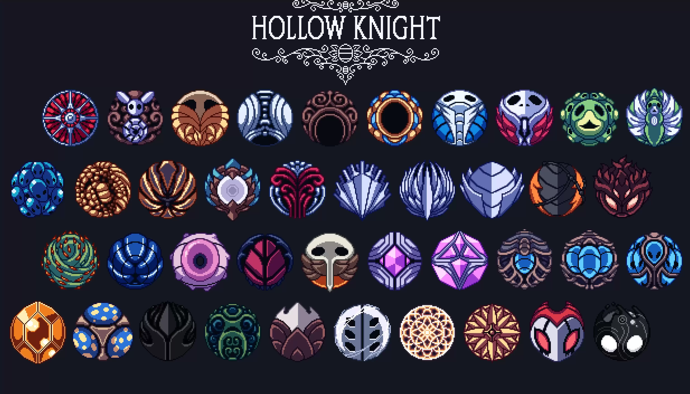
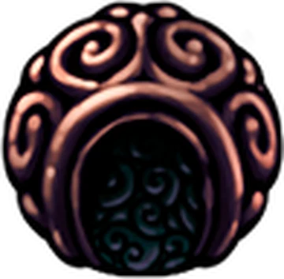
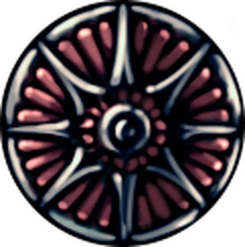

Tipos de Amuletos

En Hollow Knight, los amuletos son objetos especiales que otorgan bonificaciones pasivas al Caballero. Desde aumentar el alcance de tu arma hasta permitirte lanzar hechizos más poderosos, estos objetos son la base de la personalización. Para equiparlos, el Caballero debe descansar en un banco y poseer suficientes Muescas libres.
I. Combate y Maestría del Aguijón
Amuletos diseñados para aquellos que prefieren el combate cuerpo a cuerpo y maximizar el daño físico de su arma.
Marca de Orgullo / Largoaguijón
Aumentan drásticamente el alcance del aguijón, permitiéndote golpear enemigos desde una distancia segura.
Corte Rápido
Permite atacar a una velocidad mucho mayor, ideal para castigar jefes con ventanas de vulnerabilidad cortas.
Otros ejemplos: Fuerza Frágil/Irrompible, Piedra de Corte, Gloria del Maestro de Aguijones.
II. Magia, Alma y Hechizos
Enfocados en la generación de ALMA y el fortalecimiento de las habilidades espirituales.

Piedra de Chamán
Aumenta el tamaño y el daño de todos tus hechizos. Es considerado uno de los mejores amuletos del juego.
Torcedor de Hechizos
Reduce el coste de ALMA necesario para lanzar hechizos, permitiendo ataques consecutivos.
III. Supervivencia y Curación
Vitales para los nuevos jugadores o para enfrentar áreas de plataformas extremas como el Sendero del Dolor.
Concentración Rápida
Cura tus máscaras en casi la mitad de tiempo.
Corazón de Sangreazul
Otorga máscaras adicionales de vida azul (no curables).
Canción de Larvas
Gana ALMA cada vez que recibes daño.
IV. Utilidad y Amuletos Únicos
Estos amuletos cambian mecánicas del mundo o son piezas clave del lore de Hallownest.

Brújula Caprichosa
Muestra tu ubicación en el mapa. Aunque parezca simple, es el amuleto más usado por exploradores.
Amuletos de Lore Máximo
Existen amuletos como el Alma de Rey o el Corazón del Vacío que no pueden ser desequipados una vez obtenidos y son necesarios para desbloquear los finales secretos del juego.